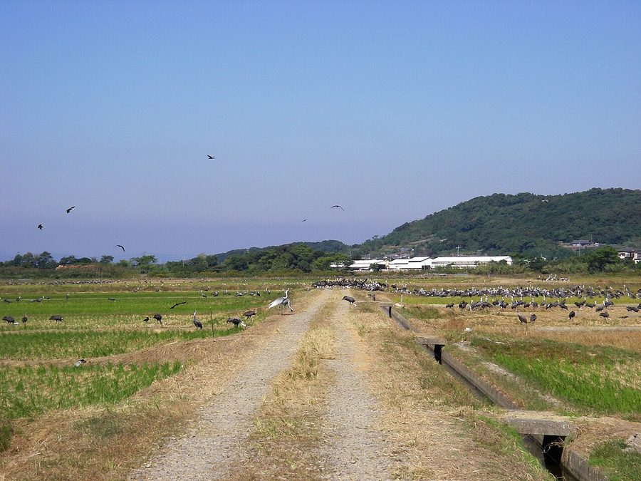
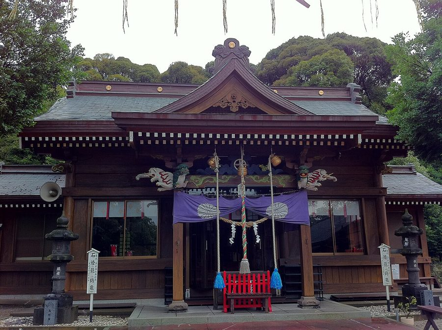
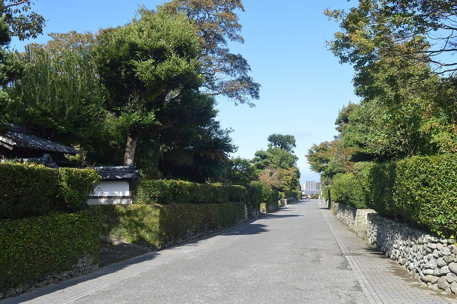
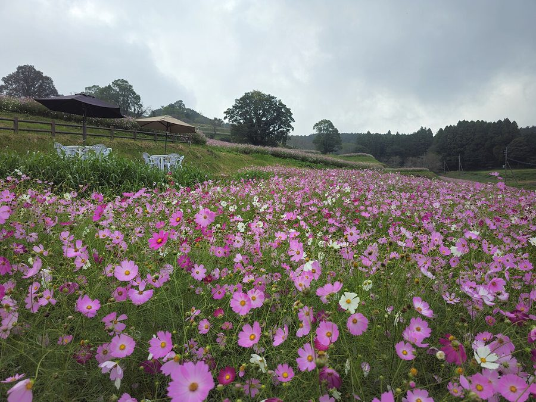

鹿児島県出水市のソフトクリーム・ジェラート・かき氷（7件）
寄り道スポット検索アプリ「ヨッテコ」の収録データから、鹿児島県出水市のソフトクリーム・ジェラート・かき氷を営業時間・料金つきで一覧にしました（2026年8月時点）。
最も遅くまで開いているのはひかりの郷（22:00まで）。
鹿児島県出水市はどんなまち？
数字で見る🔍鹿児島県出水市
まちの横顔




- 地形: 鹿児島県の北西部、鹿児島市から北北西に約80キロメートルの場所に位置する市です。市域北部は八代海（不知火海）に面し、東部は矢筈岳を主峰とする肥薩山脈が北東に走り、南部は紫尾山を中心とする山塊が東西に伸びています。市域の大半は扇状地で、米ノ津川などが北西流して八代海に注ぎ、出水平野が広がっています。
- 観光: 熊本県との境目にあり、ツルの渡来地として知られる市です。日本最大のツルの越冬地として知られ、2021年に「出水ツルの越冬地」がラムサール条約湿地に登録され、2022年には日本で初めてラムサール条約湿地自治体の認証を受けました。出水のツルは日本の音風景100選にも選定されています。
寄り道充実度（全国偏差値）
偏差値・順位は、ヨッテコ収録データ（2026年8月時点・26,033件）を市区町村別に集計した施設数の全国分布（1,728市区町村）から毎回算出しています。カードを押すとカテゴリ別の分析に切り替わります。
アイスから見た鹿児島県出水市
アイスのお店を市内で数えると7件。全国650位タイで、1市区町村あたりの平均は7.7件です。——多くはない。それでも、食べられる店はある。
- かき氷を出す店は29%、全国水準（16%）の1.8倍。夏に立ち寄るなら、氷という選択肢が広いまちです。
- 14%——アイスクリームを置く店は、全国の39%に届きません。その場で食べる一本が主役、という構成でしょうか。
- ソフトクリームを出す店は43%で、全国水準（62%）を下回ります。定番以外に目を向けたほうが、面白い一品に出会えそうです。
出典: 施設データ=ヨッテコ収録データ（26,033件・2026年8月時点）。偏差値・全国順位・全国水準は全1,728市区町村の分布から毎回算出。 / 人口=総務省「住民基本台帳に基づく人口、人口動態及び世帯数」（2026年1月1日現在） / 面積=国土地理院「全国都道府県市区町村別面積調」（2026年4月1日時点） / 森林率=農林水産省「2025年農林業センサス（農山村地域調査）」市区町村別林野率（2025年、林野率（林野面積÷総土地面積）） / 年平均気温=気象庁「平年値（1991-2020年）」。市区町村の代表点（国土交通省「大字・町丁目レベル位置参照情報」）から最も近い観測点の値 / まちの解説=日本語版Wikipedia「出水市」（https://ja.wikipedia.org/wiki/出水市、2026年8月22日取得、CC BY-SA 4.0） / 写真=Wikimedia Commons（各キャプションに作者・ライセンスを記載）
曜日別の営業施設数
| 月 | 火 | 水 | 木 | 金 | 土 | 日 |
|---|---|---|---|---|---|---|
| 4 | 4 | 5 | 5 | 6 | 6 | 6 |
月・火曜日が最も休みが多く（各2件が定休）、年中無休は2件です。※営業時間データのある6件で集計
施設一覧
| 施設 | 営業時間 |
|---|---|
| far café ソフト 美容室と菓子店が同一建物で重なる。鹿児島県出水市に立地し、ソフトクリームを提供 | 11:00〜17:00（月・木休） |
| おるがんと氷店 Shaved Ice Shop かき氷 | 11:00〜17:00（月休） |
| すみとカフェ アイス 2019年オープンした鹿児島県出水市の小さなカフェ。ソフトクリームを提供 | — |
| ひかりの郷 ソフト | 10:00〜22:00（火休） |
| パティスリータンプルタン かき氷 3坪の小さなお菓子屋さん。かき氷を提供。 | 10:00〜18:00（火・水休） |
| 手作り工房 うっふ ジェラート 店名の「うっふ」はフランス語で「たまご」を意味する。地元・出水産の新鮮な卵を使い、自家製コーンで提供するジェラートやロー… | 10:00〜18:00 |
| 特産館いずみ ソフト 出水市が建設、市内農業者39名が出資する直売所。約30種の柑橘や季節果物を用いたソフトクリームを提供。南九州西回り自動車… | 09:00〜17:30 |